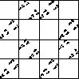
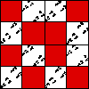
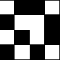
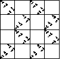
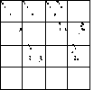
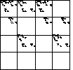

|  |
First, we drive an IFS by the s = 4 Logistic map.
We see the dirven IFS is very far from filling up the unit square. |
|  |
To begin to understand this picture, we
determine the empty length 2 addresses
for the s = 4 Logistic map. |
|
Now drive an IFS randomly, except forbid the pairs that
are forbidden in the s = 4 logistic map. We get the same picture as with the
s = 4 logistic map. |
|  |
Another way
to see this is to apply the deterministic IFS rules, but imposing the
forbidden combinations. |
|  |
Now we drive an IFS by the s = 2 Tent map.
Note the differences between this driven IFS and that of the s = 4 logistic map. |
|  |
For comparison we drive an IFS by the
s = 3.732 Logistic map. |
|  |
Now drive an IFS randomly, except forbid the pairs that
are forbidden in the s = 3.732 logistic map. Unlike with the s = 4 logistic
map and the s = 2 tent map, here the pictures are different. |